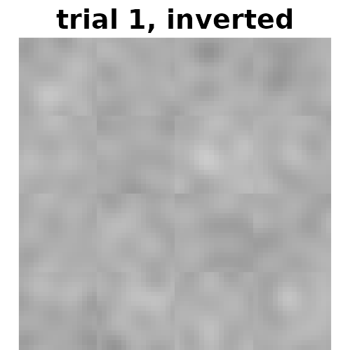
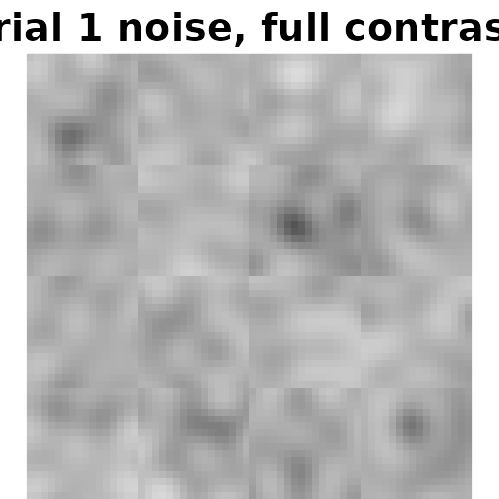
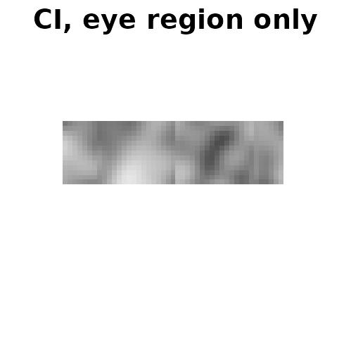

Short answers to questions that come up once the basics in
vignette("reverse-correlation-walkthrough") are in place.
Each recipe runs at a small size so this vignette builds in seconds;
real studies use img_size = 512 and several hundred
trials.
A stimulus set and a simulated participant
The recipes share one stimulus set: a synthetic face (no photo, so no image licence) and 120 trials.
n <- 64
x <- matrix(seq(-1, 1, length.out = n), n, n, byrow = TRUE)
y <- -matrix(seq(-1, 1, length.out = n), n, n)
face <- exp(-(x^2 / 0.45 + y^2 / 0.75))
face <- face - 0.55 * exp(-(((x + 0.3)^2 + (y - 0.25)^2) / 0.012))
face <- face - 0.55 * exp(-(((x - 0.3)^2 + (y - 0.25)^2) / 0.012))
face <- face - 0.35 * exp(-(x^2 / 0.10 + (y + 0.42)^2 / 0.006))
face <- (face - min(face)) / (max(face) - min(face))
base_face <- tempfile(fileext = ".png")
png::writePNG(face, base_face)
stimulus_path <- tempfile("stimuli")
generateStimuli2IFC(list(face = base_face), n_trials = 120, img_size = n,
stimulus_path = stimulus_path, seed = 1, nscales = 3,
ncores = 1, save_as_png = FALSE)
rdata_file <- list.files(stimulus_path, pattern = "\\.Rdata$", full.names = TRUE)[1]So that the results show something, a simulated participant responds
according to a hidden template. evidence is how strongly
each trial’s noise matches it.
e <- new.env()
load(rdata_file, envir = e)
set.seed(99)
template <- generateNoiseImage(rnorm(max(e$p$patchIdx)), e$p)
evidence <- vapply(seq_len(120), function(i) {
base::sum(generateNoiseImage(e$stimuli_params$face[i, ], e$p) * template)
}, numeric(1))
evidence <- evidence / sd(evidence)
set.seed(7)
choice <- ifelse(evidence + rnorm(120) > 0, 1, -1) # 1: original chosen, -1: invertedNoise-only stimuli
To show noise without a face (for a task about textures, say, or to
inspect the noise itself), use a uniform mid-grey base image. A uniform
image has no contrast to maximize, so pass
maximize_baseimage_contrast = FALSE.
grey <- tempfile(fileext = ".png")
png::writePNG(matrix(0.5, n, n), grey)
noise_path <- tempfile("noise")
generateStimuli2IFC(list(grey = grey), n_trials = 4, img_size = n,
stimulus_path = noise_path, seed = 1, nscales = 3, ncores = 1,
maximize_baseimage_contrast = FALSE)
ori <- png::readPNG(file.path(noise_path, "rcic_grey_1_00001_ori.png"))
inv <- png::readPNG(file.path(noise_path, "rcic_grey_1_00001_inv.png"))
show(ori, "trial 1, original", zlim = c(0, 1))
show(inv, "trial 1, inverted", zlim = c(0, 1))
These are ordinary 2IFC stimuli: the stimulus PNGs average the noise
with the base, so on a grey base the noise appears at half contrast, and
the .Rdata file is analysed as usual. For the noise at full
contrast, for display rather than for a task, ask for it back as a data
frame, one column per trial:
noise <- generateStimuli2IFC(list(grey = grey), n_trials = 4, img_size = n, seed = 1,
nscales = 3, ncores = 1, return_as_dataframe = TRUE,
maximize_baseimage_contrast = FALSE,
save_as_png = FALSE, save_rdata = FALSE)
# The same scaling the stimuli use, without the base: most noise falls in [-0.3, 0.3].
noise_1 <- pmin(pmax((matrix(noise[[1]], n, n) + 0.3) / 0.6, 0), 1)
show(noise_1, "trial 1 noise, full contrast", zlim = c(0, 1))
Ratings instead of a two-image choice
generateCI() weights each trial’s noise by its response,
so any numeric response works, not only 1/-1.
If participants rated each stimulus on a scale, recode the scale so that
its midpoint is 0 and its direction is the one you want the
classification image to show. Here a 1–4 scale (“not at all” to “very
much”) is recoded to -2, -1, 1, 2:
set.seed(11)
rating <- as.integer(cut(evidence + rnorm(120, 0, 0.7), c(-Inf, -0.7, 0, 0.7, Inf)))
table(rating)
#> rating
#> 1 2 3 4
#> 34 30 26 30
ci_rating <- generateCI(1:120, c(-2, -1, 1, 2)[rating], "face", rdata_file,
save_as_png = FALSE)
cor(as.vector(ci_rating$ci), as.vector(template))
#> [1] 0.5764985Check the direction. Recoded the wrong way round, the scale gives the anti-classification image, and that looks like a plausible face too. With real data there is no template to compare against: compare instead with a CI whose direction you know, such as a 2IFC CI for the same target, or check that the expected features appear.
Responses must be numeric and complete. A missing rating, a factor,
or TRUE/FALSE stops generateCI()
with an error naming the trials, rather than returning an image of
NAs. Drop unanswered trials from stimuli and
responses alike.
Matching the InfoVal reference to the design
computeInfoVal2IFC() compares a classification image
with a reference distribution: CIs built from random responses. The
reference must match the CI’s design. When it does not, the InfoVal is
miscalibrated.
When some trials were dropped
Say 20 trials were dropped because the participant did not respond in time. The CI is built from 100 stimuli; the default reference uses all 120.
kept <- setdiff(1:120, seq(3, 120, by = 6))
ci_kept <- generateCI(kept, choice[kept], "face", rdata_file, save_as_png = FALSE)
attr(ci_kept, "trial_design")$stimuli[1:10]
#> [1] 1 2 4 5 6 7 8 10 11 12generateCI() records the stimuli it used, so the
matching reference is one argument away. The default call says the two
differ:
default <- computeInfoVal2IFC(ci_kept, rdata_file, iter = 10000)
#> This classification image was built from 100 of the 120 saved stimuli, but the reference is built over 120. Brinkman et al. (2019) require the reference to use the stimuli the CI was built from. To score it that way, pass reference_stimuli = attr(<your CI>, "trial_design")$stimuli.
#> InfoVal reference computed with reference_method = "gram". References from rcicr 1.5.0 and earlier used "images"; pass reference_method = "images" to reproduce them bit for bit.
matched <- computeInfoVal2IFC(ci_kept, rdata_file, iter = 10000,
reference_stimuli = attr(ci_kept, "trial_design")$stimuli)
#> InfoVal reference computed with reference_method = "gram". References from rcicr 1.5.0 and earlier used "images"; pass reference_method = "images" to reproduce them bit for bit.
c(default = default, matched = matched)
#> default matched
#> 3.837017 2.423099Fewer stimuli give a noisier CI, so its norm is larger under random
responding too: against the full-set reference, the default InfoVal is
inflated. Each reference is simulated once and stored in the
.Rdata file for later calls.
A masked classification image
A CI computed with a mask holds NA in the
masked pixels. Its InfoVal is computed over the unmasked pixels, against
a reference over the same pixels. Here only the eye region is kept (in a
mask, 0 is masked):
mask <- matrix(0, n, n)
mask[18:30, 10:54] <- 1
ci_eyes <- generateCI(1:120, choice, "face", rdata_file, mask = mask, save_as_png = FALSE)
infoval_eyes <- computeInfoVal2IFC(ci_eyes, rdata_file, iter = 10000)
#> InfoVal reference computed with reference_method = "gram". References from rcicr 1.5.0 and earlier used "images"; pass reference_method = "images" to reproduce them bit for bit.
show(ci_eyes$ci, "CI, eye region only")
infoval_eyes
#> [1] 1.384019An InfoVal over part of the image is not comparable with one over the whole image.
Several classification images at once
batchComputeInfoVal2IFC() scores a list of CIs, such as
the result of batchGenerateCI2IFC(), and simulates each
distinct reference once:
set.seed(3)
data <- data.frame(
participant = rep(c("p1", "p2", "p3"), each = 120),
stimulus = rep(1:120, 3),
response = c(ifelse(evidence + rnorm(120, 0, 0.5) > 0, 1, -1),
ifelse(evidence + rnorm(120, 0, 2) > 0, 1, -1),
sample(c(1, -1), 120, replace = TRUE))
)
cis <- batchGenerateCI2IFC(data, "participant", "stimulus", "response", "face",
rdata_file, save_as_png = FALSE)
infovals <- batchComputeInfoVal2IFC(cis, rdata_file, iter = 10000)
round(infovals, 2)
#> face_participant_p1 face_participant_p2 face_participant_p3
#> 6.32 0.73 0.20The third participant answered at random, and scores near 0.
A CI averaged over participants
No reference is defined for a CI that averages several participants
(or repeated presentations of the same stimulus): every reference
assumes one response per stimulus from one responder.
computeInfoVal2IFC() returns a number but says it is not
calibrated.
ci_group <- generateCI(data$stimulus, data$response, "face", rdata_file,
participants = data$participant, save_as_png = FALSE, n_cores = 1)
infoval_group <- computeInfoVal2IFC(ci_group, rdata_file, iter = 10000)
#> This classification image averages 3 participants. Every InfoVal reference in rcicr assumes one response per stimulus from one responder, and none is defined for this design, so this InfoVal is not calibrated for it. Where each participant saw every stimulus once, compute InfoVal for each participant's own CI instead.
infoval_group
#> [1] -3.524378Averaging shrinks the CI’s norm, so against a single-responder reference the group CI scores below zero, although one of its participants scored 6.3 on their own. Score each participant’s own CI instead, as above.